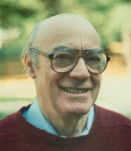

Please note: the AAS Obituaries are temporarily being hosted on this website while their full content is being ingested into the PubPub publishing platform newly adopted by the Bulletin of the American Astronomical Society. When the migration is complete, your existing links will take you to the final, migrated content. Contact peter.williams@aas.org with any questions.
Bertram D. Donn (1919-2012)
Bertram Donn, a pioneer in astrochemistry and NASA research, died on December 28, 2012 at the age of 93. His scientific contributions and many international contacts and collaborations did much to establish NASA's strong reputation among astronomers and planetary scientists. He was the first head of the Astrochemistry Group at the NASA Goddard Space Flight Center. He organized and regularly participated in scientific meetings around the world, and between 1948 and 2013 he published over 118 research papers.
Bertram David Donn was born on May 19, 1919 in Brooklyn. He attended Brooklyn College and received a B.S. degree in 1940. During the Second World War, he was in wartime research at Columbia Labs in New York City. Then, in 1945 he entered Harvard as a graduate student where he began an observational program on interstellar extinction and reddening in clouds. This work triggered his interest in the field of astrochemistry. He received an M.S. degree from Harvard in 1947 and his Ph.D. in 1953. He immediately joined the Physics Department at Wayne University in Detroit, Michigan, but after one year moved to the University of Chicago where he worked with Harold Urey until 1957. He then returned to Wayne University and set up a laboratory to continue his research in low temperature chemical processes. During the summer of 1958 he was a visiting researcher with the Free Radical Program initiated by Herbert Broida at the old National Bureau of Standards (now NIST). He joined NASA’s Goddard Space Flight Center in 1959. From 1974-1975 he was a visiting professor at Cornell University while on sabbatical from Goddard. He received Goddard’s Exceptional Achievement Award in 1983 and 1988 and served on the steering committee for the International Halley Watch. He retired from NASA in 1989 but continued as a visiting professor at the University of Virginia through 1995. His first marriage, to Mary Creason, ended in divorce. They had three children: Stephen, Susan, and Arthur. In 1960 he married Marjory Maxwell who survives him, as do their two sons, Jeffrey and Allen, as well as the three children by his first marriage.
Bert’s research at Goddard spanned theory, observation, and experiment, with connections to NASA missions such as Skylab, Apollo, and the International Ultraviolet Explorer. Almost all of his research problems concerned cometary and interstellar matter in some way, and so perhaps it is not surprising that he began laboratory research in each of these areas while supervising several PhD students. As a result two laboratories were formed within the Astrochemistry Group; the Cosmic Ice laboratory and the Nucleation and Dust Chemistry Laboratory each of which continues today doing high-level research. Bert was also an early NASA contributor to the astrobiological literature, and set in motion several astrobiology-related projects.
Bert was never completely satisfied with either the theoretical work or laboratory experiments that he and others did. He knew the limitation of both observation and theory and was always eager to improve things by making more precise simulations, constructing better models, or pursuing more difficult laboratory experiments. He was in some cases the first to publish models that would help to advance the field, but would remain their harshest critic; e.g. the nucleation theory used to calculate the rate of grain formation in circumstellar outflows and the possible presence of PAH molecules in the interstellar medium.
Bert was an innovative thinker and a wonderful resource for new theoretical and experimental ideas, which often led to what seemed to be difficult directions. But the challenges he created led to many new fruitful results for him, his collaborators, and for the young researchers he guided. His wide ranging insights and his kind and respectful interactions remain a model for all of us.
Obituary written by: R. L. Hudson (NASA Goddard Space Flight Center), J. Nuth, III (NASA Goddard Space Flight Center), M. H. Moore (NASA Goddard Space Flight Center)
Additional links:
BAAS Citation: BAAS, 2014, 46, 005